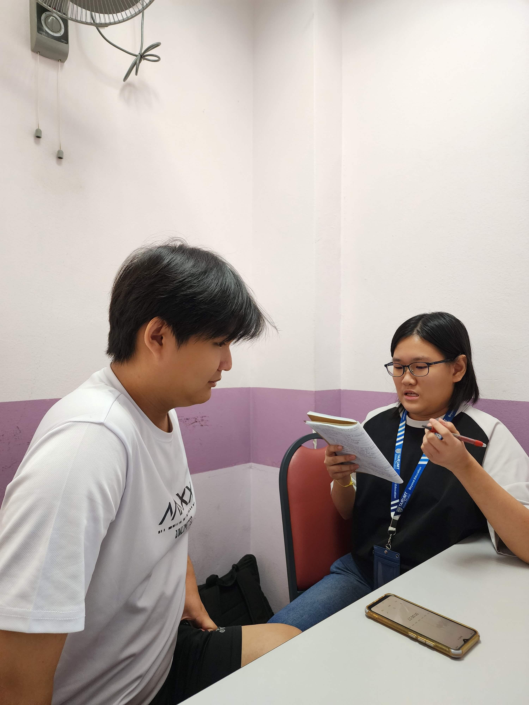

Behind the Scenes
Explore how our team captures stories visually — from lighting setups to editing timelines. Ctrl+Backspace is where we rewind and reveal the process.



Explore how our team captures stories visually — from lighting setups to editing timelines. Ctrl+Backspace is where we rewind and reveal the process.